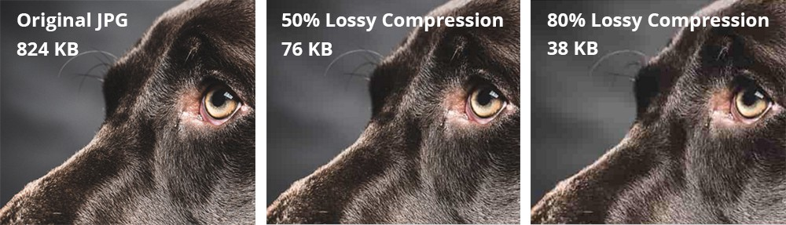

Om er voor te zorgen dat je opslag niet te snel vol raakt door allemaal afbeeldingen, video's en geluidsbestanden,
maar ook om er voor te zorgen dat het downloaden van deze grote bestanden minder tijd kost bestaat er bestandscompressie,
die verkleind de bestandsgroote van grote bestanden en ze kunnen sneller worden gedownload. Er zijn twee soorten compressie:
1. Lossy compression, bij lossy compression wordt informatie uit het originele bestand aangepast en verwijderd hierdoor wordt de omvang van het bestand kleiner.

2. lossless compression, integenstelling tot lossy compression wordt de kwaliteit niet beïvloed,
hier wordt echter van een andere handige methode gebruik gemaakt, dit is het beste uit te leggen aan de hand van een voorbeeld:
bijvoorbeeld vier pixels naast elkaar hebben dezelfde waarde 7x 21 dan zal dit worden opgeslagen als een geheel (7,21).
Ook geluidsfragmenten kunnen worden gecomprimeerd, een van de bekentste compressietechnieken voor muziek is MP3, dit is een lossy compression-methode.